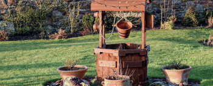

Бурение скважин на воду
Планируете загородное строительство? В таком случае, первое, о чем вам необходимо позаботиться это о доступе к питьевой воде. К сожалению, далеко не везде существует центральный водопровод, а там, где он присутствует, качество воды оставляет желать лучшего. Существует много способов обеспечить себя чистой жидкостью, пригодной для приема в пищу и безопасной для работы бытовой техники. «Аква-ресурс» предлагает вам бурение скважин на воду в Ленинградской области. Почему данный способ наиболее выгоден и эффективен? Читайте далее.
Как обеспечить водоснабжение в загородном доме?
Очень просто. Необходимо лишь выбрать один из существующих способов водоснабжения:
-
ПРУД
Вода из близлежащего водоема отлично подойдет для полива огородов, однако для использования в бытовых целях, а тем более для питья, она не пригодна
-

КОЛОДЕЦ
Вода здесь уже чище, чем из пруда, однако использовать ее для питья можно далеко не всегда. Такой источник часто подвержен различным механическим загрязнениям. Помимо этого, уровень жидкости в колодце может сильно меняться, в результате чего вы столкнетесь с проблемой нехватки воды.
-
СКВАЖИНА
В зависимости от типа, круглый год обеспечивает вас чистой питьевой водой в неограниченных количествах. Обеспечивает высокий уровень надежности и длительный срок службы.
Таким образом, бурение скважин под воду поможет вам, на несколько десятков лет, забыть о проблемах нехватки питьевой воды. Однако для того, чтобы добиться этого, необходимо ответственно подойти к проводимым мероприятиям. Рассмотрим существующие способы бурения скважин.
Какая скважина на воду лучше?
Научно-производственная компания «Аква-Ресурс» является компанией полного цикла по проектированию, монтажу и обслуживанию систем водоочистки для промышленных, бытовых и коммунальных нужд. В нашей компетенции весь спектр услуг, начиная с консультирования в области проектирования и эксплуатации оборудования по водоподготовке и заканчивая сдачей готовых объектов «под ключ» с последующим сервисным обслуживанием и обучением персонала.
Мелкие (песчаные)
Глубина бурения скважины составляет 10-40 м.
Преимущества:
-
✓ Низкая стоимость
Песчаная скважина – это наиболее доступный способ получения воды в загородном доме. При использовании буровых установок для бурения скважин на воду цена составляет 2000 руб/м.Таким образом, от вас не потребуется значительных вложений.
-
✓ Высокая скорость бурения скважины
Уже спустя 1-2 дня у вас появится автономный источник водоснабжения.
-
✓ Долговечность
Песчаная скважина прослужит вам не менее 8 лет.
Недостатки:
-
✗ Низкое качество воды
В связи с небольшой глубиной, скважина достигает лишь песчаного водоносного пласта. Как правило, вода в нем содержит различные загрязнители. Такую жидкость нельзя употреблять в пищу без предварительной очистки.
-
✗ Необходимость дополнительной очистки
Если вы желаете использовать воду не только в хозяйственных целях, то вам потребуется установка дополнительной системы фильтрации.
-
✗ Малый дебит
Песчаная скважина предоставляет не более 0,3 – 1 м3/час. Помимо этого, периодически возникают перебои с подачей воды
Глубокие (артезианские)
Глубина бурения составляет 30-200 м
Преимущества:
-
✓ Высокое качество воды
Скважина не подвержена поверхностным загрязнениям, за счет чего во многих случаях воду можно употреблять без предварительной очистки
-
✓ Высокая производительность
Уводоносный известняк, залегающий глубоко под землей, дает до 3 м3/час. При необходимости, возможно добиться и большей производительности. Помимо этого, отсутствуют перерывы в подаче воды.
-
✓ Повышенный срок эксплуатации
Поистине, приобретая артезианскую скважину, вы можете быть уверены, что она послужит еще и вашим детям. Срок ее службы составляет до 50 лет.
Недостатки:
-
✗ Высокая цена
Стоимость бурения скважин на воду буровой установкой в «Аква-ресурс» составляет 2000 руб/м. Учитывая, что средняя глубина артезианских скважин, составляет 120 м, вы должны быть готовы к расходам.
Так какой же тип бурения скважины в Санкт-Петербурге лучше выбрать? Безусловно, артезианский источник предоставляет воду лучшего качества и станет идеальным решением при круглогодичном проживании за городом. При этом проблема высокой стоимости – вопрос вполне решаемый. Ресурса артезианской скважины вполне хватит на несколько домов. Вы можете договориться о ее совместном использовании с соседями. Это в несколько раз снизит цену на бурение скважины в Санкт-Петербурге.
Что входит в стоимость бурения скважины на воду?
Бурение скважины
на воду «под ключ»
- – проектирование скважины и выбор метода бурения;
- – подготовка и согласование проектно-сметного пакета документов;
- – проведение необходимых мероприятий при помощи установки для бурения скважины на воду;
- – бурение до чистой воды;
- – подготовка паспорта скважины.
Помимо этого, мы предлагаем бурение скважин малогабаритными установками. Это позволит провести необходимые операции в тех местах, куда заезд тяжелой техники невозможен или нежелателен. Мы гарантируем вам проведение работ на высоком уровне с учетом всех ваших требований.
Почему «Аква-ресурс»?
Мы не будем говорить вам шаблонных словосочетаний о высокой квалификации наших сотрудников и большом опыте работе. О том, что вы можете нам доверять, красноречиво говорят наши довольные клиенты. В их числе: оператор магистральных нефтепроводов «АК «Транснефть», финская домостроительная компания Honka и многие другие. Не тратьте свое время и нервы на бурение скважин на воду своими руками. Позвоните по телефону 385-08-06 в Санкт-Петербурге и доверьтесь профессионалам. Мы гарантируем вам полезную и чистую питьевую воду.